Thank you for purchasing WordPress template. This documentation consists of several parts and shows you the entire process of setting up and administering WordPress Website from scratch.
What is WordPress CMS?
WordPress is a free and open source blogging tool and a content management system (CMS) based on PHP and MySQL. It enables you to build Websites and powerful on-line applications and requires almost no technical skills or knowledge to manage. Many aspects, including its ease-of-use and extensibility, have made WordPress the most popular Web site software available. Learn More
What is WordPress a template
WordPress template is a skin for website built with WordPress CMS platform. In other words you can easily change your WordPress Web site appearance installing new template in a few easy steps. With all it's simplicity WordPress template is provided with all necessary source files and you are free to edit or extend it the way you need.
Files structure
The template package you have downloaded consists of several folders. Let's see what each folder contains :
Documentation - contains documentation files
template_instructions.html - main documentation file. You are right here :)
Screenshots - contains template screenshots. Not for production
fonts_info.txt - contains links where the template custom fonts can be downloaded
info.txt - contains instructions on how to extract source files
Prepare
Before you proceed to setting up your WordPress Web site please make sure you are fully prepared. Please complete the following preparation steps:
Editing software
To feel comfortable working with WordPress template we recommend you to download all applications required. You can see the list of required software at the template preview page. Requirements may vary depending on the template, we're going to tell you in general what’s needed:
First of all you need the right applications to extract the password protected sources_#########.zip archive. You can use WinZip 9+ (Windows) and Stuffit Expander 10+ (Mac).
You may also need Adobe Photoshop application. It’s used to edit .PSD source files and it’s necessary if you want to edit template design graphics and images.
To edit template source code files you need some code editor like Adobe Dreamweaver, Notepad++, Sublime Text etc.
To upload files to the hosting server you may need an FTP Manager like Total Commander, FileZilla, CuteFTP etc.
Hosting
As WordPress CMS is a PHP/MySQL based application, you need to prepare a hosting environment to run WordPress.
If you have a live hosting please make sure it matches WordPress software requirements and is ready to be used for WordPress websites.
Otherwise you can run WordPress locally on your computer using the local server. To create a local hosting server please use the localhost applications as WAMP, AppServ, MAMP etc. Any of those can be easily installed as any other program and used to run WordPress.
Please check the tutorials below on how to configure local development environment:
Download correct WordPress engine version. At the template preview page, in the requirements section you can see the required WordPress version. Please make sure you are downloading the correct one.
The WordPress engine could be downloaded from the official website at WordPress.org Download WordPress. In case you need earlier release you can click the Release Release Archive link.
When you are done with the downloading you need to extract the files from the engine and template packages. To extract the files from the WordPress engine ZIP package you can use any archive manager that can handle ZIP archives.
After extracting the files you need to upload the WordPress engine files and folders to your hosting server.
All these files and folders should be uploaded to your hosting server. The engine files should be uploaded to the PUBLIC_HTML or WWW directory on your server.
If you don’t see PUBLIC_HTML or WWW directories on your hosting server please contact your hosting and specify where to upload the website files.
Please check the following tutorials on how to upload files to server:
In your browser address bar type your domain name/root to the WordPress files and press Enter. This will start the installation procedure.
Creating configuration file. The initial WordPress installation screen will notify you that the configuration file is unavailable. Click Create Configuration File button to create it.
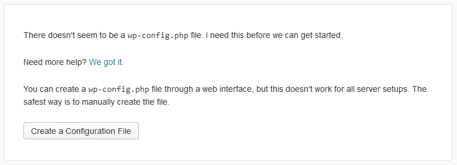
Inserting database details. Here you need to input the WordPress database connection details.
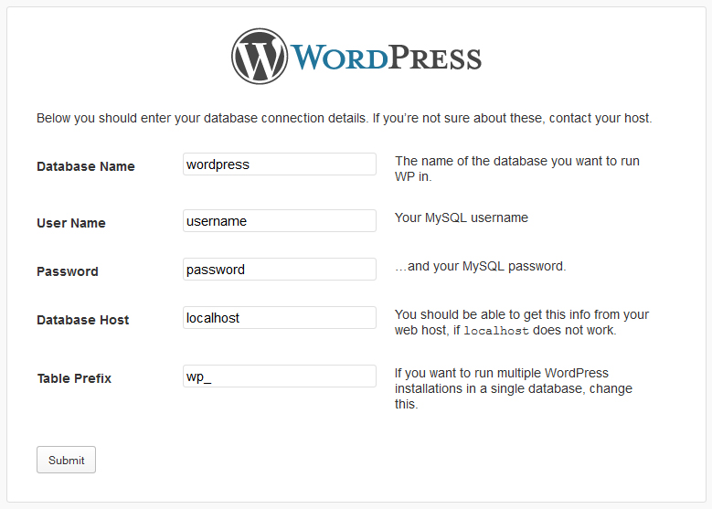
Inserting website details. On the following screen you should input the website details such as:
website title
administrator username and password
website email address
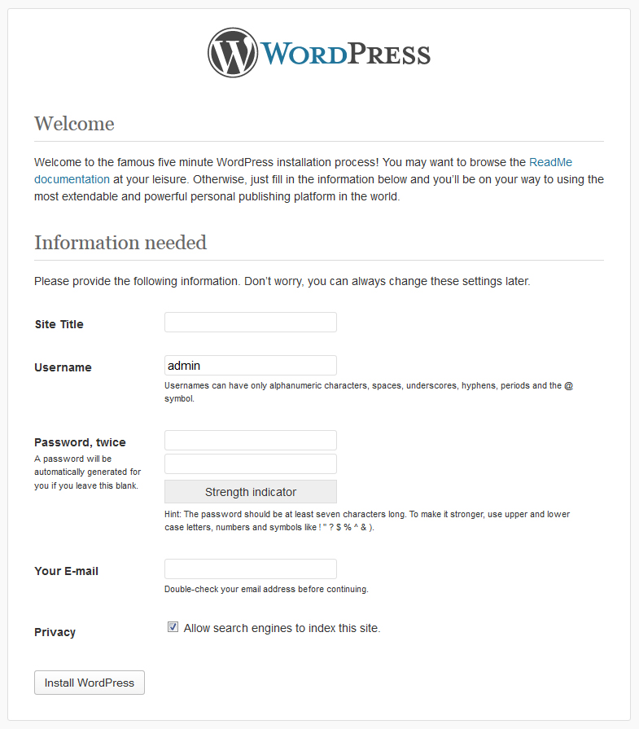
When you are done click Install WordPress button.
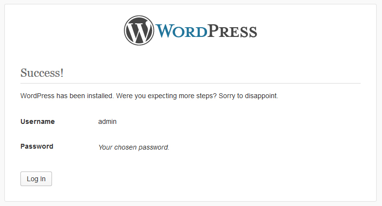
If all data has been inserted correctly you’ll see the Success window with the button to LogIn to your WordPress administration panel.
Congratulations! You have successfully installed WordPress CMS.
Theme installation
There are two ways to install the theme: via the admin panel of WordPress or via FTP. If one way does not work for you for some reason, you can always try the other one.
Upload via WordPress admin:
Installation process includes two steps: framework installation and child theme installation. Both steps are basically identical and easy to follow.
Login to your WordPress admin panel (add /wp-admin to your domain name in the browser address bar).
Go to the menu Appearance > Themes and click the Install Themes tab.
Click the Browse button and navigate to the unzipped template package on your computer.
Look for a file called CherryFramework.zip. Click on it to select, then click Ok.
Click the Install Now button and wait till the installtion is complete.
Congratulations, you have just installed the framework. Now you can proceed to installing the child theme: theme2410.zip. The steps are the same:
Go to the menu Appearance > Themes and click the Install Themes tab.
Click the Browse button and navigate to the unzipped template package on your computer.
Look for a file called theme2410.zip (where XXXX is the unique number of your theme). Click on it to select, then click Ok.
Click the Install Now button and wait till the installtion is complete.
Click the Activate link to change the current layout of the site to the theme your purchased.
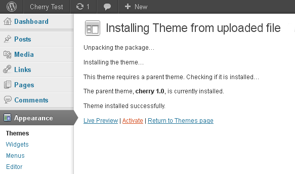
Congratulations, both the framework and theme have been successfully installed!
If there are problems to install them via the admin panel, here's the alternative way to do it.
Upload via ftp:
This way assumes that you have access to your WordPress site files on FTP through the File Manager of your hosting control panel or an FTP client like Filezilla, CutrFTP,. Total Commandr etc.
Unzip the CherryFramework.zip and theme2410.zip file to any folder on your hard drive (fist right click each of the .zip files, select Unzip to… CherryFramework and theme2410 accordingly, so you get two folders called CherryFramework and theme2410).
Upload the CherryFramework and theme2410 folders to the /wp-content/themes/ directory on your FTP server.
Login to your WordPress admin panel (add /wp-admin after your domain name in the browser address bar).
Go to the menu Appearance > Themes.
Under the Available Themes section find theme2410 and activate it by clicking Activate button.
Plugin Installation
Once the theme is installed and activated, you will need to install its plugins:
In your WordPress admin panel, go to the menu Plugins -> Add New.
Click Upload.
Click Browse.
Navigate to the theme####.zip\includes\plugins folder in your template package (the theme####.zip should be unzipped).
Select of the .zip files in this directory and click Ok.
Click Install Now.
When the plugin is installed, click Activate.
If there are more than one plugin in the /plugins/ folder, repeat the steps to install and activate all of them.
To make your WordPress website look like our live demo, please follow the instructions below. We also suggest you always have a backup .sql file exported from your database.
Go to the menu Cherry Options > Import.
Follow the steps there. On Step One you will be prompted to upload widgets.json (This file located in the /theme/sample_data/ folder of the template package contains widgets settings. Before importing the file, make sure there are no widgets already added to your site: go to the menu Appearance > Widgets, open the widget areas on the right and if there any widgets there, drag and drop them to the left side under Inactive Widgets so all these widget areas are empty). Once you have selected the file, click Show widget settings button (If you do not want to install widgets settings from live demo you need to skip this step).
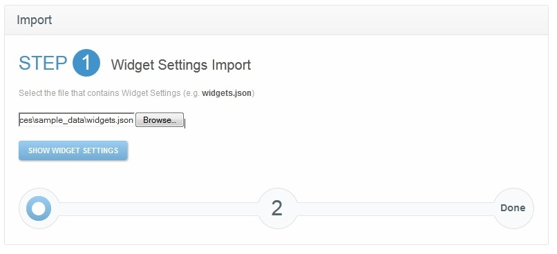
This will allow you to choose what widgets you would like to install from the list. All widgets should be checked if you would like to install them all.Сlick Import Settings to proceed to the next step.
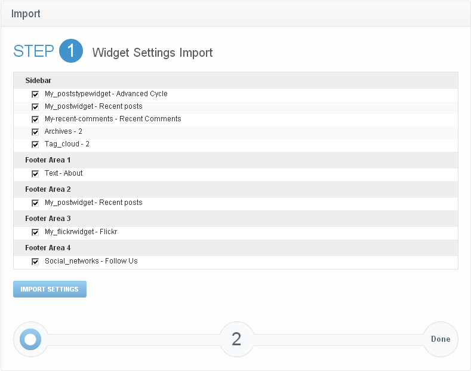
On the second step you will be prompted to upload the file with .xml extension, which contains all template sample data (posts, pages, categories etc.). Once you have selected the file, click Upload File and Import button (If you do not want to install sample data from live demo you need to skip this step.)
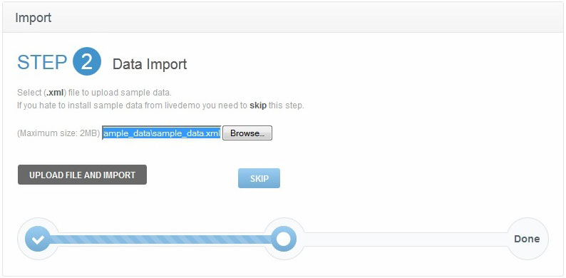
After this you will need to select the author for the posts and pages you are importing. Click Import Data button to run the process.
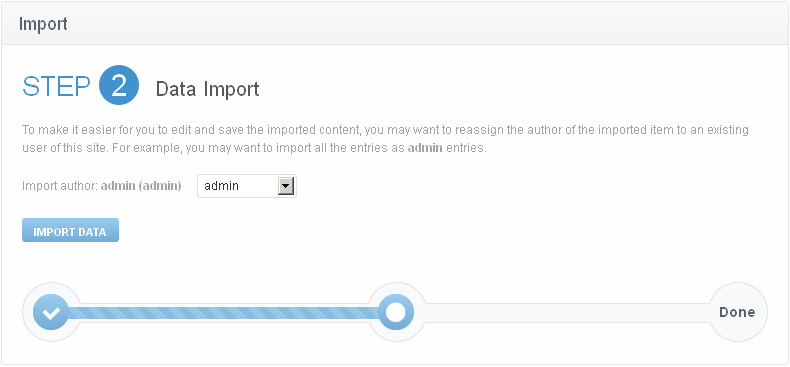
Sample data import process usually takes approximately 2 minutes so be patient and wait a bit. Please, don't terminate this process.
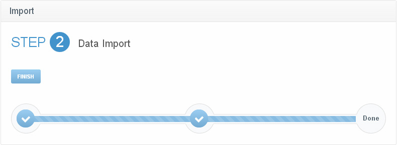
At the end you should get a Finish button to click on. It will take you to the Permalink Settings page.
Click the Save Changes button, to activate SEO-optimized permalinks structure.
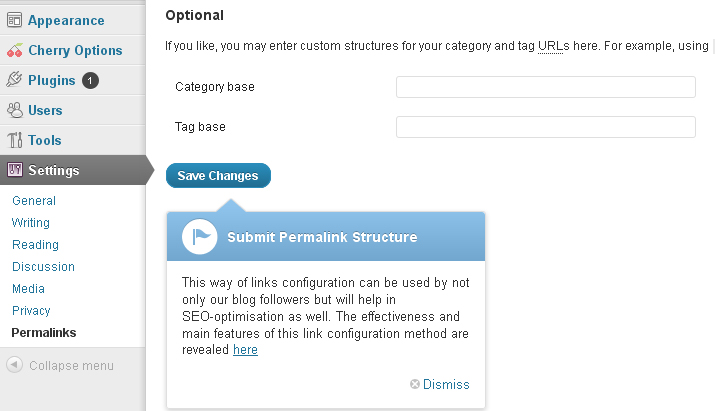
Manual installation
If you are having problems with installing the sample data, please follow the instructions below.
ATTENTION: Importing the SQL file to your database will overwrite your existing content and website settings. DO NOT import the SQL file if you want to keep the existing content.
NOTE: Always backup your database before performing any modifications.
Please note that the prefix of WordPress database tables should be wp_
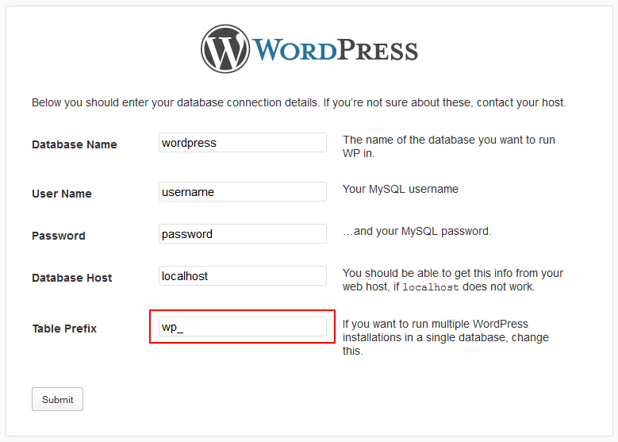
If the database prefix is different, it should be changed according to this manual.
To make your WordPress look like our live demo please, follow the instructions bellow.
Copy the"uploads" folder (that is located under the theme/manual_install/folder of your template package) to the /wp-content/ folder on your FTP.
Open the theme2410.sql file that is located in the theme/manual_install/ folder in any text editor (preferably Dreamweaver or Notepad) and replace all instances of "your_website_url_here" with your website URL in the entire document using the Find and Replace tool (hit Ctrl+H hot keys to open this window). E.g.: http://www.mywebsite.com
Please, make sure that you do not have the forward slash "/" sign at the end of the address and the url starts with http://www.
Save your changes and close the file.
Now you can import the dump file with the phpMyAdmin tool or some other database management tool.
Permalinks settings
NOTE: Congifure the given settings right after the installation of the theme.
In this template custom Permalinks are used, so the standard paths like http://demolink.org/?p=1 are replaced with http://demolink.org/home etc. This way of links configuration can be used not only by our blog followers but will also help with SEO-optimisation of your site. The advantages and the main features of this link configuration method are covered at http://codex.wordpress.org/Using_Permalinks
Please follow the steps below:
Log in to your WordPress Administration Panel (Dashboard).
Go to the menu Settings > Permalinks.
On the permalinks settings page please check Custom structure, then copy and paste the following settings /%category%/%postname%/
With that done, click the Save changes button.
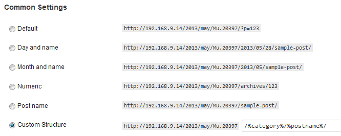
If you install the theme with the dump.sql file the settings will be configured automatically. However, even in this case still you need to save current settings by clicking Save changes. Otherwise, some links may not work.
Menu setup
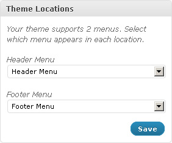
WordPress 3.0 comes with a new menu management panel, which makes building your site’s navigation very easy and flexible.
Log into your WordPress Administration Panel (Dashboard).
Click the Post tab
To choose post format, check the ones listed under the Format box.
Note: Some of these formats have their own options. Their settings will appear under the post editor.
Below is the list of available post formats with their descriptions and settings.
Standard Post Format
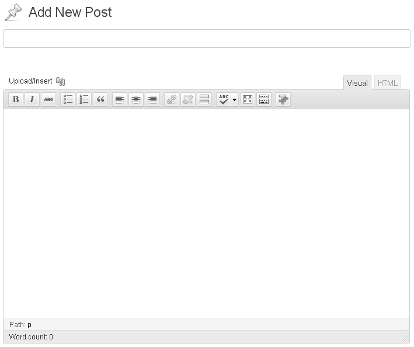
Standard Post Format
A regular, standard post which has the following fields:
Post title - post title
Post content - post content
Categories - post category(-ies)
Tags - post tags
Featured Image - post image
and other fields which can be enabled under the Screen Options section located at the top right corner.
Aside Post Format
Aside Post Format
This is a simplified regular post version. In other words, it comes with a post content field only and you don't need to fill in the post title and other fields. This is a so called post-note.
Gallery Post Format
The main feature of this post format is the ability to maintain unlimited number of attached images.
Adding a Gallery Post Format:
Click the Add Media button 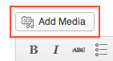
To add images from your hard drive, drag and drop your files into the box that appears, or click Select Files to choose a picture from your computer to upload.
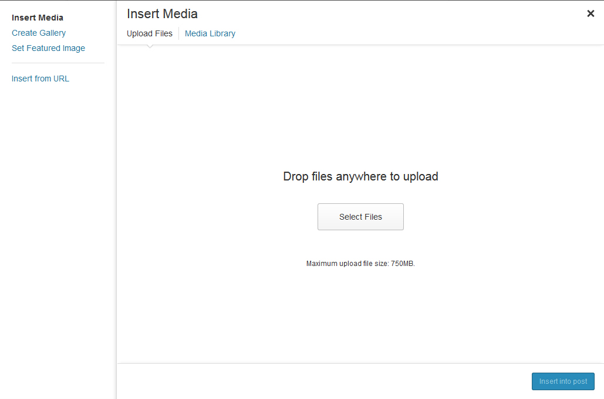
After the images have finished uploading, you will be shown all the images in your Media Library. Select Uploaded to this post to see attached images.
When you’ve finished editing, you may close Media Library. Uploaded images will be attached automatically.
The gallery post format has all the standard fields (like title, content, categories etc.), the regular post format has.
Link Post Format
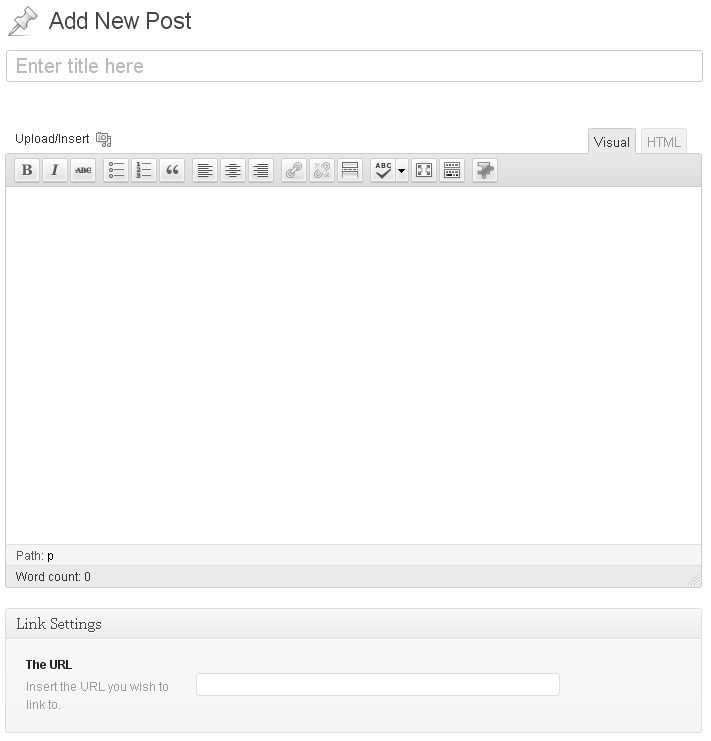
Link Post Format
After selecting the Link Post Format you will get an additional URL field, where you need to specify the link (URL) for the target page/resource. The Post title will be used as your link text.
In case you will fill in the post content field, it will be used as the target page/source description.
Image Post Format
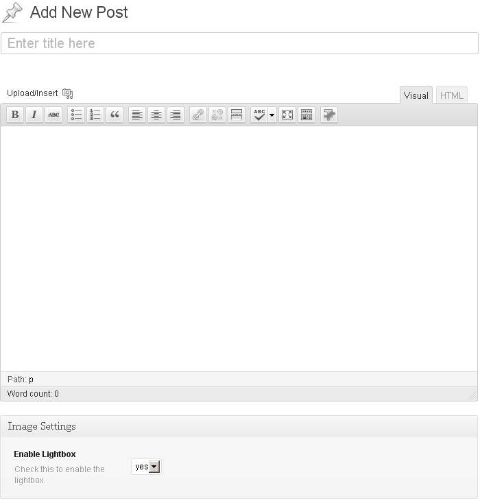
Image Post Format
An Image Post Format is a post format based on single image, uploaded via the Featured Image option. Upon selecting the Image Post Format you will be able to disable the lightbox image feature by selecting the corresponding setting in the Enable Lightbox image option.
Quote Post Format
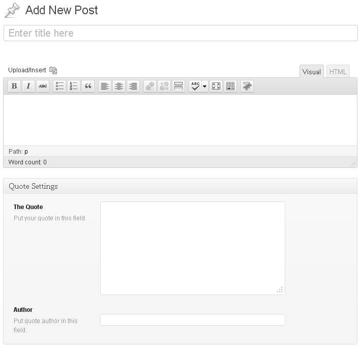
Quote Post Format
A Quote Post Format serves as so-called post-citation. It's used to publish a quotation of some person.
Upon selecting this post format you will get an additional The Quote field - basically the body of the quotation and an Author field - quotation author name.
Audio Post Format
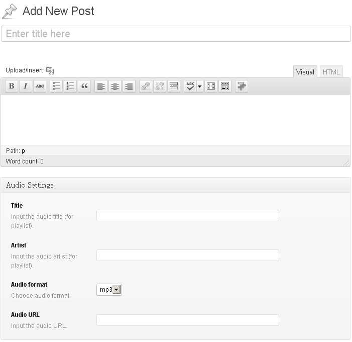
Audio Post Format
Audio Post Format is used for publishing audio-content.
Upon selecting this post format you will get the following additional options:
Title - a track title
Artist - an audio track performer
Audio Format - an audio track format
Audio URL - a direct link to the audio track
Video Post Format
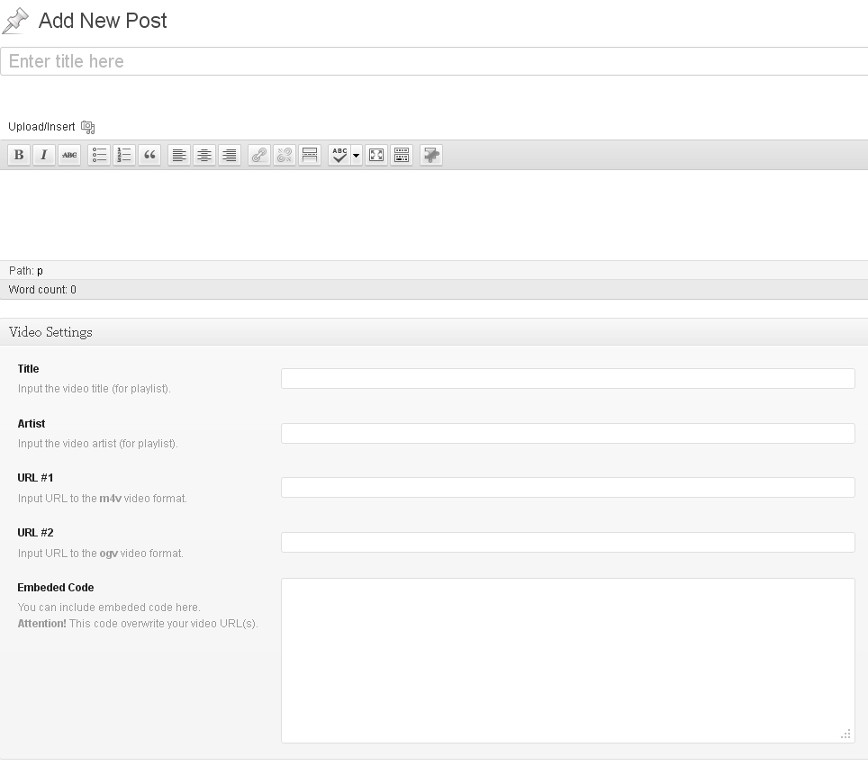
Video Post Format
A Video Post Format is used for publishing video-content.
Upon selecting this post format you will get the following additional options:
Title - a video-clip title
Artist - a video-clip performer
URL #1 - a direct link to a video-clip in m4v format
URL #2 - a direct link to a video-clip in ogv format
Embedded Code - used for off-site video embedding, e.g. via youtube, vimeo etc.
Creating a slider post
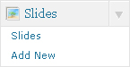
Slides are essentially custom post types http://codex.wordpress.org/Post_Types#Custom_Types which means that they are different from common posts, such as blog posts, portfolio posts etc. That allows us to manage the content of the site really easy.
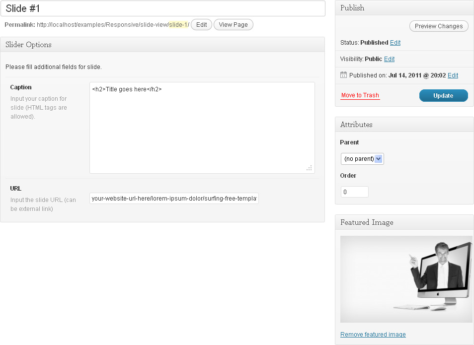
Creating a slider post
Log into your WordPress Administration Panel (Dashboard).
Click the Slider tab
And now click the Add New tab
Insert your slider title.
Upload your image with the help of the Featured Image option (click the Set featured image link)
You can use the following fields for your slider:
Caption -a field for slide caption.
URL -a field for slide URL (you can put external link here).
And click the Publish button
Adding a Portfolio post
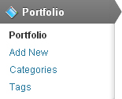
Portfolio items are essentially custom post types http://codex.wordpress.org/Post_Types#Custom_Types which means that they are different from common posts, such as blog posts, portfolio posts etc. That allows us to manage the content of the site really easy.
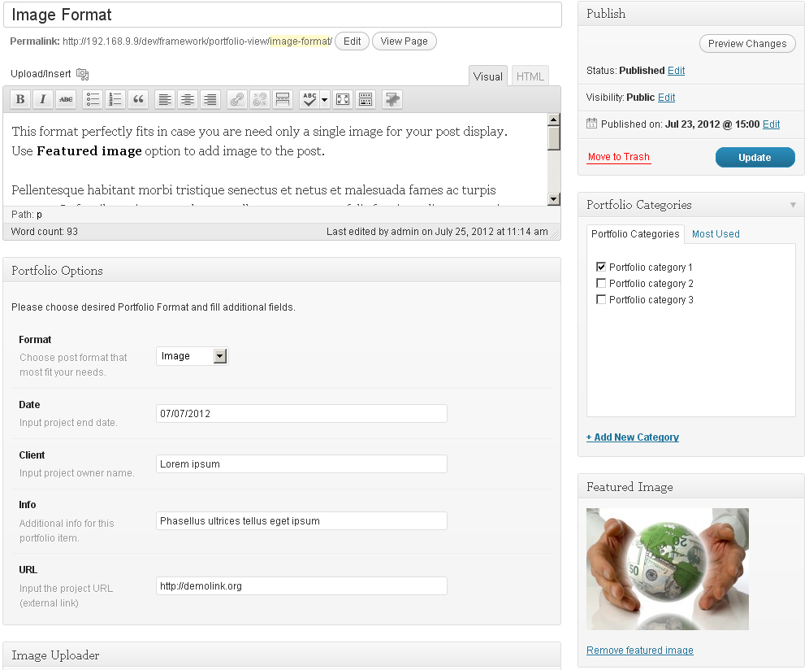
Adding a portfolio post
Log in to your WordPress Administration Panel (Dashboard).
Click the Portfolio tab
And now the Add New one
Fill in all the required fields (title, content)
Upload your image with the help of the Featured Image option (click the Set featured image link)
And click the Publish button
Choosing Portfolio post format
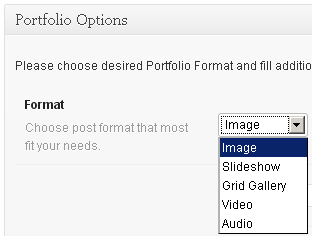
Creating a portfolio post in this theme allows you to select one of the available post types.
Image - a default gallery post format. Displays only featured image.
Slideshow - the project gallery is displayed as a slideshow. It can contain unlimited number of images uploaded and attached to the post.
Grid Gallery - post images are displayed as a gallery. Can contain unlimited number of images uploaded and attached to the post.
Video - by selecting this post type you can embed a video from any video hosting (YouTube, Vimeo etc.).
Audio - by selecting this post type you can embed your audio link.
Adding a Testimonials post
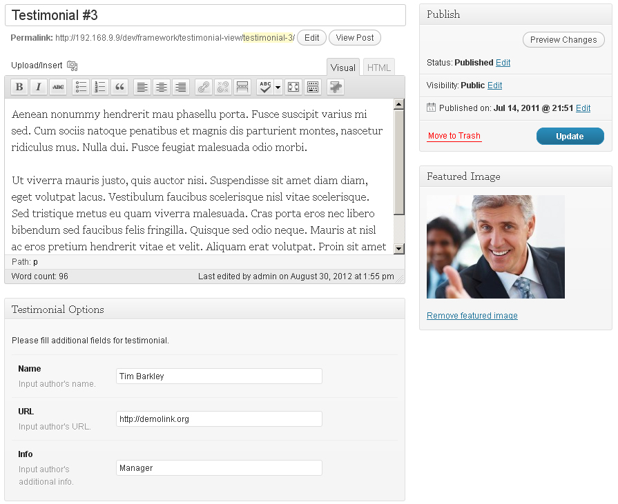
Adding a Testimonials post
Log into your WordPress Administration Panel (Dashboard).
Click the Testimonials tab
And click the Add New tab
Fill in all the required fields (title, content)
Upload your image with the help of the Featured Image option (click the Set featured image link)
You can use the following fields for this sort of posts:
Name - author's name
URL - author's link
Info - author's additional info
Hit the Publish button
Adding an FAQs post
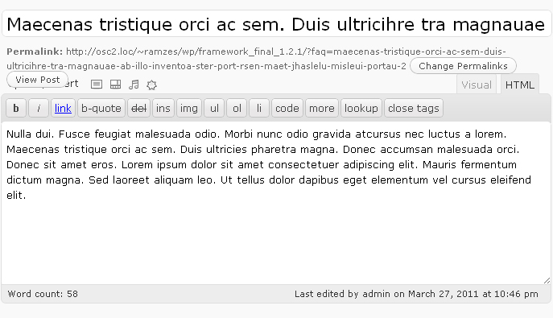
Adding a FAQs post
Log into your WordPress Administration Panel (Dashboard).
Click the FAQs tab
And now the Add New button
Since it is a question/answer type of post, the title of the post is the question and the content is the answer.
Click Publish
Adding an Our Team post
Adding a Our Team post
Log into your WordPress Administration Panel (Dashboard).
Click the Our Team tab
And now the Add New button
Fill in all the required fields (title, content)
Upload your image with the help of the Featured Image option (click the Set featured image link)
You can use the following fields for this sort of posts:
Position - the position of the person.
Info - an additional info
Click Publish
Portfolio page
Creating a Portfolio page
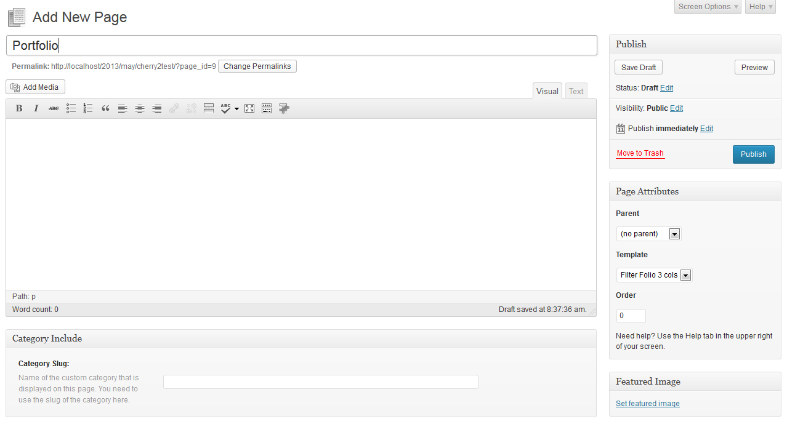
Creating a Portfolio page
Portfolio pages can be created with the help of the page templates
Log in to your WordPress Administration Panel (Dashboard).
Click the Pages tab
Click the Add New tab
Type in your page name, for example Portfolio page
Select your page template ( Filter Folio 2 cols, Filter Folio 3 cols or Filter Folio 4 cols in the Page Attributes drop-down menu)
With that done, click the Publish button
Note: Please do not post any content to the editor field if you use one of the pages pattern.
A shortcode is a powerful content building tool http://codex.wordpress.org/Shortcode. Shortcodes are easy to use. First off all, make sure that the editing mode is set to Visual.
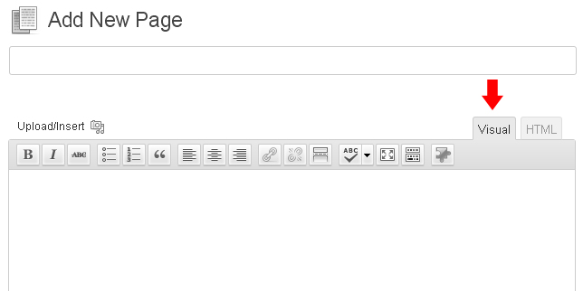
Then please click the button for the shortcodes. Then select the shortcode you want to insert.
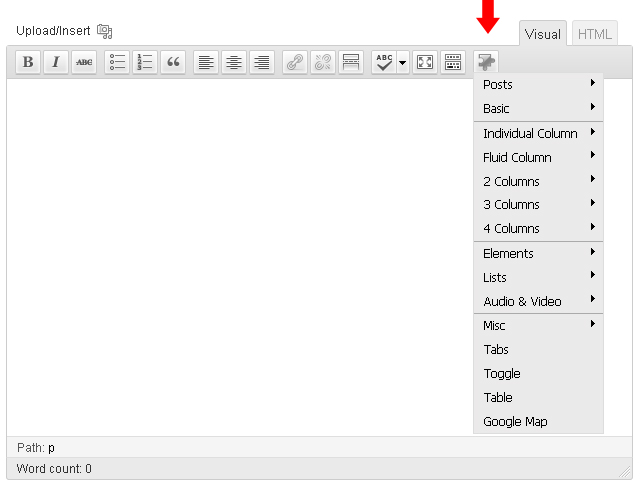
All available shortcodes are conditionally divided into the three groups:
Dynamic - used for content output (posts, custom post types, tags etc.)
Grid Columns - various columns for grid forming.
Elements - additional elements for content forming.
Other - additional elements for advanced/complex content forming.
Description: displays the recent posts which can be configured with the following options (post type, posts amount, post format, excerpt length, button title and others).
Recent Testimonials
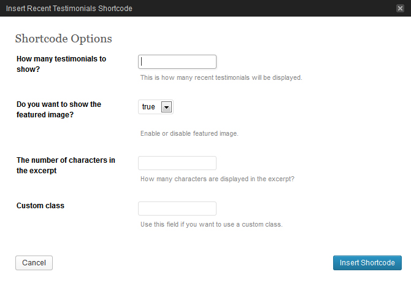
[recenttesti num="2" thumb="true"]
Description: displays specified amount of Testimonials custom post type posts, includes the ability to show/hide posts images and manage words count.
Description: displays the posts in carousel view, has various additional options.
Roundabout
[roundabout title="Title" num="3" type="blog"]
Description: Roundabout is a jQuery plugin that converts a structure of static HTML elements into a highly customizable turntable-like interactive area.
Description: used to display information blocks that include title, icon, text, button. The main feature of this shortcode is the existence of pre-installed icons.
Displays recent comments in a more convenient format. The given widget includes the following options:
Title: - Widget Title
Number of comments to show: - Number of comments to show.
Cherry - Recent Posts
Displays your recent posts. You can also show custom posts of certain categories and add a read more link. The given Widget contains the following options:
Title: - Widget Title
Category Slug: - Post Category Slug.
Post Format: - Choose Post Format for displaying posts.
Post Order: - You can choose order for displaying posts.
Posts per page: - The number of posts to display.
Excerpt length (words): - excerpt length (the number of words)
Link Text: - the Link Text that is displayed after the Recent Posts.
Link Url: - Link URL that is displayed after the Recent posts.
Cherry - Advanced Cycle
The multifunctional widget is used to display different post types including the blog posts, as well as the functionality of changing display settings. This widget contains the following options:
Title: - Widget Title
Posts type: - select Posts type
Number of posts to show: - the number of posts
Sort by: - Post selection option
Reverse sort order (ascending): - reverse sort order
Show number of comments - show the number of comments
Show meta - show meta
Container class: - wrapper class. Set to featured_custom_posts by default
Show post title - show post title.
Date as title - for date usage instead of the title
Before title: - custom HTML-markup before Title
After title: - custom HTML-markup after Title
Show post excerpt - show excerpt
Excerpt length (words): - excerpt length (the number of words)
Excerpt as link - convert excerpt into a link
Show "More link" - show link More link after the post
Link text: - Link Text
Link class: - CSS-class for the link More link
Show post thumbnail - show thumbnail for a post
Width: - Image Width
Height: - Image Height
Thumbnail as link - convert the image into a link
Show global link to all posts - Show global link to all posts
Link text: - the text of the given link
Link URL: - Link URL
Cherry - Social Networks
This is the Widget that allows linking to your social network accounts. The widget contains the following options:
Title: - Widget Title
Facebook URL, Twitter URL, Flickr URL etc. - the links to your Social Network accounts
Display: the way icons are displayed.
Icons - icons only.
Labels - text only.
Both - icons and text.
Cherry - 125x125 Ads
This is the Widget that allows you to show a set of banners. The widget contains the following options:
Title: - Widget Title
Image Ad link: - path to your banner image.
Ad link: - your banner link.
Cherry - Twitter
This widget alllows you to display the latest twitts from your twitter account. The widget contains the following options:
Title: - Widget Title
Twitter Name: - your twitter name
Twitts number: - amount of twitts to show.
Cherry - Flickr
This widget alllows you to display photos from your flickr gallery. It contains the following options:
Title: - Widget Title
Flickr ID: - your flickr ID
Images count: - amount of photos to show.
Link Text: - the link text under your flickr photos.
Cherry - vCard
This widget alllows you to display information about your company or about you. It contains the following options:
Title (optional): - Widget Title
Street Address: - put your street address here
City/Locality: - enter your city or locality here
State/Region: - enter your state or region here
Zipcode/Postal Code: - enter your zipcode or postal code here
Telephone: - telephone number
Email: - your email
Cherry Options
The following theme contains the Settings option. These settings allow you to change of theme’s color palette, order of items, turn items on/off and do lots of other things. In order to use these settings, please go to Appearance → Cherry Options.
General
Body styling - you can select the body color and the background pattern.
Header background color - Header background color
Buttons and links color - Buttons and links color
Body Text - You can choose your preferred font for body text. There are following options available for editing the fonts:
Font size
Line height
Font Family
Font style (normal, bold, italic)
Character Sets (Latin, Greek, Cyrillic etc.)
Color
Note: Font marked with * means that it will be loaded from the Google Web Fonts library.
H1-H6 Headings - You can choose your preferred font for headings and titles. There are following options available for editing the fonts:
Font size
Line height
Font Family
Font style (normal, bold, italic)
Character Sets (latin, greek, cyrillic etc.)
Color
Note: Font marked with * means that it will be loaded from the Google Web Fonts library.
Display search box? - show/hide the search bar in the header
Display breadcrumbs? - show/hide the breadcrumbs in the pages
Custom CSS - if you need to add some CSS rules, but you don't want to mess with the main css file, you can use this field. Just insert your new css rules
Logo & Favicon
What kind of logo? - indicates what kind of logo to use, whether the text one or the image logo.
Logo URL - with Image logo selected you can upload the new image with the help of the 'upload' feature or use any pic from the Media Library.
Logo Typography - You can choose your preferred font for text logo. There are following options available for editing the fonts:
Font size
Line height
Font Family
Font style (normal, bold, italic)
Character Sets (Latin, Greek, Cyrillic etc.)
Color
Note:* near the font means that font will be loaded from the Google Web Fonts library.
Favicon - you can upload the new favicon with the help of the 'upload' feature or use any pic from the Media Library.
Navigation
Menu Typography - You can choose your preferred font for main menu. There are following options available for editing the fonts:
Font size
Line height
Font Family
Font style (normal, bold, italic)
Character Sets (latin, greek, cyrillic etc.)
Color
Note:* near the font means that font will be loaded from the Google Web Fonts library.
Delay - delay in milliseconds that defines when the menu hides
Fade-in animation - enable/disable the fade-in animation
Slide-down animation - enable/disable the slide animation
Speed - the speed of the submenu expanding
Arrows markup - enable/disable arrows for the menu items that have submenus
Slider
Disable Slider
You can switch off slider.
Slideshow
Sliding effect - slider transition effect
Number of columns - number of columns
Number of rows - Number of rows
Banner effect - Select your banner animation type
Pause time - Pause time (ms)
Animation speed - Animation speed (ms)
Slideshow - Animate slider automatically?
Thumbnails - Display thumbnails?
Pagination - Display pagination?
Next & Prev navigation - Display next & prev navigation?
Display next & prev navigation only on hover? - If 'yes' the navigation button (prev, next and play/stop buttons) will be visible on hover state only, if 'no' they will be visible always
Play/Pause button - Display Play/Pause button?
Loader - Slider loader
Accordion
Slides to display - Select the slides that you want to be displayed on slider. If no slide is selected, all slides will be displayed.
Slideshow - Animate slider automatically?
Pause on mouseover - The auto play will pause when you mouse over the slider.
Pause time - Pause time (ms).
Animation speed - Animation speed (ms)
Animation slowdown - You can choose different types of animation slowdown for transition of slides.
Mouse events for transition of slides - You can choose different types of mouse events for transition of slides.
Active slide - Set the number of slide that will be active by default. If the value is 0, all slides will be of the same width when page loads.
Blog
Blog Title - your Blog Title used on Blog page
Related Posts Title - your Title used on Single Post page for related posts.
Sidebar position - you can select the position for the sidebar(right or left)
Blog image size - the Image size (Normal size or Large size) for the Blog page
Single post image size - the image size (Normal size or Large size) for the single post page
Enable Meta for blog posts? - display meta for posts
Enable excerpt for blog posts? - display excerpt for posts
Portfolio
Filter - Portfolio filter.
Show title? - Enable or Disable title for portfolio posts.
Show excerpt? - Enable or Disable excerpt for portfolio posts.
Excerpt words - Excerpt length (words).
Show button? - Enable or Disable button for portfolio posts.
Layout - Portfolio has different layout modes. You can set and change the layout mode via this option.
Footer copyright text - footer text content. If the text field is empty, the default content will be displayed. It is located in the footer.php file
Google Analytics Code -you can put a code for gathering your site's SEO stats. . For instance, Google Analytics Code
Feedburner URL - Feedburner is a Google service that takes care of your RSS feed. Paste your Feedburner URL here to let readers see it in your website
Display Footer menu - enable or disable the footer menu
Foter Menu Typography - You can choose your preferred font for footer menu. There are following options available for editing the fonts:
Font size
Line height
Font Family
Font style (normal, bold, italic)
Character Sets (latin, greek, cyrillic etc.)
Color
Note:* near the font means that font will be loaded from the Google Web Fonts library.
Shop Beginners Kit
Important! Shop Beginners Kit works only with Cherry Framework version 2.0 and higher.
Shop Beginners Kit offer can be bought as a bundle with any WordPress theme or separately.
If you bought this offer together with WordPress theme you need to make several steps to make sure things work right.
First of all you need to install and activate the plugin either WooCommerce or Jigoshop and it will be ready to work with your store (Please note! For normal operation you need only one plugin.)
Also you can install widgets and demo products for your store.
You need make following steps:
Installation of widgets:
In the menu find Cherry Options -> Import
Select jigoshop_widgets.json or woocommerce_widgets.json depending on the plugin you’ve chosen. After that press the button Show Widget Settings (you can skip this step and set up all the necessary widgets manually using the menu option Appearance -> Widgets).
Select widgets you want to install and then press Import Settings button.
Wait till installation finishes.
Setting up demo products.
Select shop_sample_data.xml file and press Upload file and Import buttons (you can skip this step and fulfill it later).
In the field Import author select your user and press Import Data button.
After setting up demo products press Finish button, now your store is ready for further work.
If you decided to add store functionality to the template you bought previously, you need to get additional files that enable compatibility with Cherry Framework with WooCommerce and Jigoshop plugins.
First of all you need to acquire "Shop Beginners Kit" offer, than you need to do some more simple steps:
Install and activate WooCommerce or Jigoshop plugins (you need only one of them).
From the folder theme2410 copy two files (shop.less and shop.php) into the route folder with your child theme.
Also you can install widgets and demo products for your store.
You need make following steps:
Installation of widgets:
In the menu find Cherry Options -> Import
Select jigoshop_widgets.json or woocommerce_widgets.json depending on the plugin you’ve chosen. After that press the button Show Widget Settings (you can skip this step and set up all the necessary widgets manually using the menu option Appearance -> Widgets).
Select widgets you want to install and then press Import Settings button.
Wait till installation finishes.
Setting up demo products.
Select shop_sample_data.xml file and press Upload file and Import buttons (you can skip this step and fulfill it later).
In the field Import author select your user and press Import Data button.
After setting up demo products press Finish button, now your store is ready for further work.


{kind=link}
{kind=link}
{kind=link}
{kind=link}
{kind=link}
{kind=link}
{kind=link}

{kind=link}